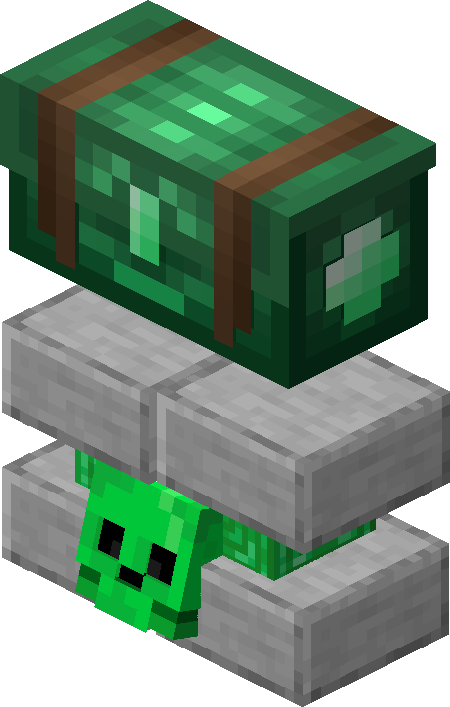
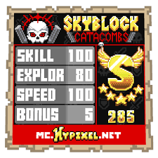

Rewards
At the end of each floor, you have the ability to unlock Trasure Chests, but the kind of chest you are able to unlock is based off of your Score. No matter what score you get, you can always unlock the Wood, Gold, and Diamond Chests. If you get 230+ Score you can unlock the Emerald Chest. If you get 270+ Score you can unlock the Obsidian Chest. If you get 300+ Score you can unlock the Bedrock Chest. But, you can only unlock one of these chests per round. As you play through a dungeon, you will get a score based on your speed, how many rooms you cleared, how many puzzles you completed, and how many secrets you completed. Let’s go through each of those criteria. In order to clear rooms, you just simply have to kill every enemy inside that room of the dungeon. As you go through the dungeon, there will be a few rooms that are designated Puzzle Rooms. These rooms don't have enemies in them, instead the only goal is to complete the puzzle. The puzzles can range from killing certain enemies in order from lowest health to highest health, or just playing a game of Tic-Tac-Toe. The last way to get a higher score in the dungeon is collecting secrets. Secrets are just little collectables hidden around the dungeon that you can collect. They are items laying on the floor you have to pick up, or chests you can open. Each secret you collect increases your score. Although the order of rooms in the dungeon is randomized, the location of secrets in those rooms is not. For example, one room will have the secrets in the same spot every run, but the location of that room won’t be the same in every run. The loot you get from the different chests is randomly chosen from a loot table every run, and that loot table is different from each floor. For more information on what you can get from each floor go to this page from the Official Hypixel Skyblock Wiki.
 